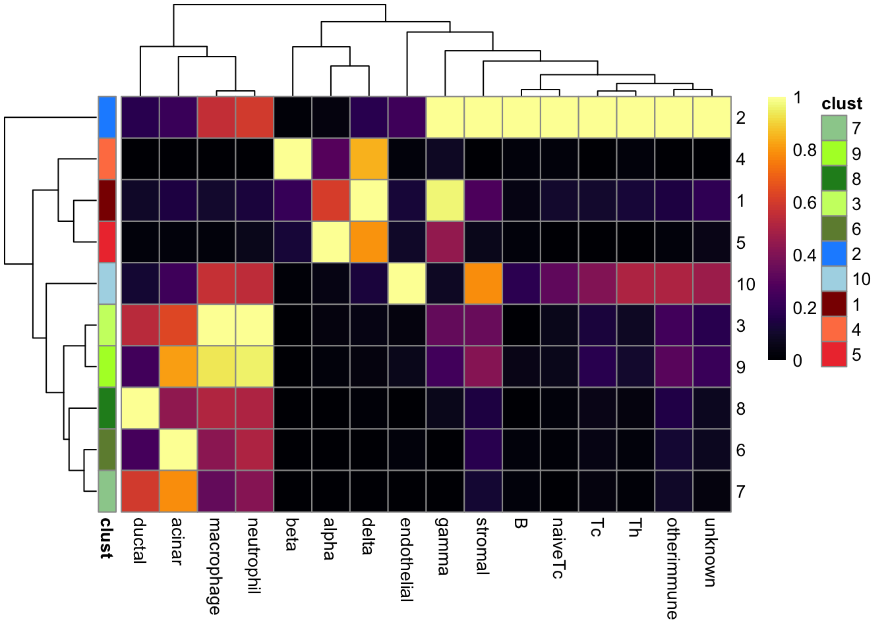
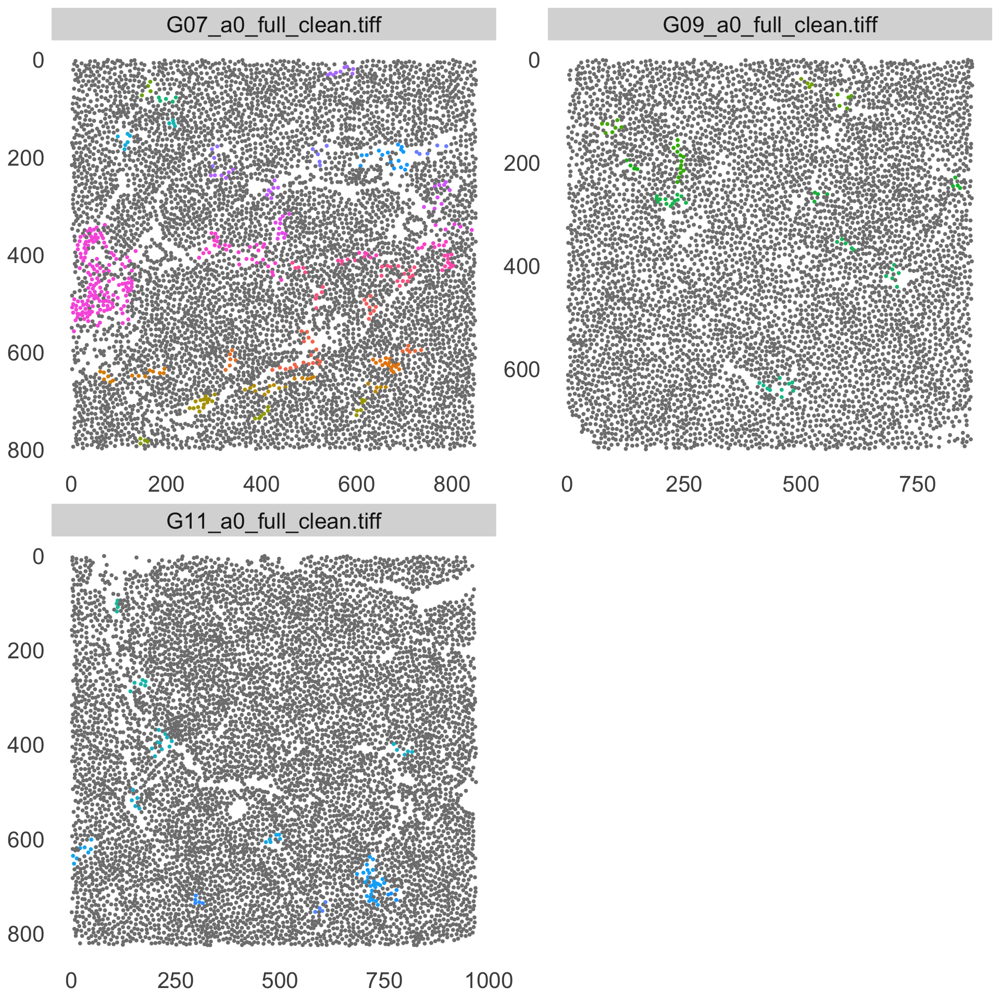
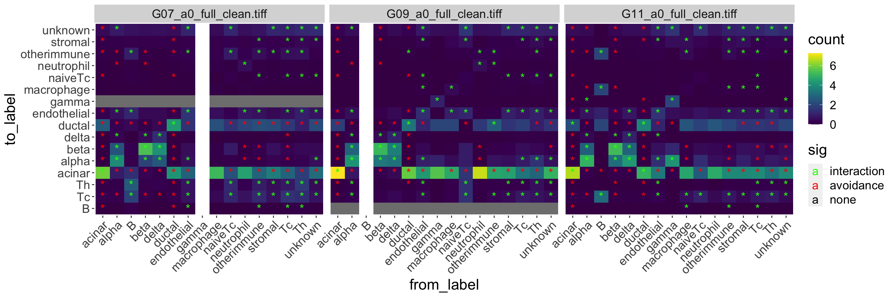

Spatial analysis
Nils Eling
2021-10-13
Last updated: 2021-10-13
Checks: 6 1
Knit directory: IMCDataAnalysis/
This reproducible R Markdown analysis was created with workflowr (version 1.6.2). The Checks tab describes the reproducibility checks that were applied when the results were created. The Past versions tab lists the development history.
The R Markdown file has unstaged changes. To know which version of the R Markdown file created these results, you’ll want to first commit it to the Git repo. If you’re still working on the analysis, you can ignore this warning. When you’re finished, you can run wflow_publish to commit the R Markdown file and build the HTML.
Great job! The global environment was empty. Objects defined in the global environment can affect the analysis in your R Markdown file in unknown ways. For reproduciblity it’s best to always run the code in an empty environment.
The command set.seed(20211007) was run prior to running the code in the R Markdown file. Setting a seed ensures that any results that rely on randomness, e.g. subsampling or permutations, are reproducible.
Great job! Recording the operating system, R version, and package versions is critical for reproducibility.
Nice! There were no cached chunks for this analysis, so you can be confident that you successfully produced the results during this run.
Great job! Using relative paths to the files within your workflowr project makes it easier to run your code on other machines.
Great! You are using Git for version control. Tracking code development and connecting the code version to the results is critical for reproducibility.
The results in this page were generated with repository version 3878351. See the Past versions tab to see a history of the changes made to the R Markdown and HTML files.
Note that you need to be careful to ensure that all relevant files for the analysis have been committed to Git prior to generating the results (you can use wflow_publish or wflow_git_commit). workflowr only checks the R Markdown file, but you know if there are other scripts or data files that it depends on. Below is the status of the Git repository when the results were generated:
Ignored files:
Ignored: .DS_Store
Ignored: .Rproj.user/
Ignored: analysis/.DS_Store
Ignored: data/
Unstaged changes:
Modified: analysis/spatial_analysis.Rmd
Note that any generated files, e.g. HTML, png, CSS, etc., are not included in this status report because it is ok for generated content to have uncommitted changes.
These are the previous versions of the repository in which changes were made to the R Markdown (analysis/spatial_analysis.Rmd) and HTML (docs/spatial_analysis.html) files. If you’ve configured a remote Git repository (see ?wflow_git_remote), click on the hyperlinks in the table below to view the files as they were in that past version.
| File | Version | Author | Date | Message |
|---|---|---|---|---|
| Rmd | 3878351 | nilseling | 2021-10-12 | Finalized patch detection |
| Rmd | c657f44 | nilseling | 2021-10-12 | Final aggregateNeighbors analysis |
This script highlights the usability of imcRtools to perform spatial data analysis.
For this, we will use a publicly available dataset provided by the imcdatasets R/Bioconductor package:
library(imcdatasets)
library(imcRtools)Here, we will read in the SingleCellExperiment object provided in the
sce <- DamondPancreas2019_sce()see ?imcdatasets and browseVignettes('imcdatasets') for documentationloading from cacheBuild spatial graph
The SingleCellExperiment object does not contain an interaction graph. For this, we will build one from scratch. For simplicity, we will build a graph based on the 10 nearest neighbors in 2 dimensions.
sce <- buildSpatialGraph(sce, img_id = "ImageNumber",
type = "knn", k = 10)Aggregate neighors and spatial clustering
Here, we will aggregate the celltype information of each cells neighborhood.
sce <- aggregateNeighbors(sce, colPairName = "knn_interaction_graph",
aggregate_by = "metadata", count_by = "CellType",
proportions = TRUE)
sce$aggregatedNeighborsDataFrame with 252059 rows and 16 columns
acinar alpha B beta delta ductal endothelial
<numeric> <numeric> <numeric> <numeric> <numeric> <numeric> <numeric>
1 0.6 0 0 0 0 0.3 0
2 0.6 0 0 0 0 0.2 0
3 0.4 0 0 0 0 0.5 0
4 0.3 0 0 0 0 0.3 0
5 0.4 0 0 0 0 0.3 0
... ... ... ... ... ... ... ...
252055 0.6 0 0 0 0 0.2 0.0
252056 0.3 0 0 0 0 0.6 0.0
252057 0.4 0 0 0 0 0.5 0.0
252058 0.5 0 0 0 0 0.2 0.1
252059 0.9 0 0 0 0 0.0 0.0
gamma macrophage naiveTc neutrophil otherimmune stromal
<numeric> <numeric> <numeric> <numeric> <numeric> <numeric>
1 0 0 0.0 0.0 0 0.0
2 0 0 0.1 0.0 0 0.1
3 0 0 0.0 0.0 0 0.0
4 0 0 0.0 0.1 0 0.1
5 0 0 0.0 0.1 0 0.1
... ... ... ... ... ... ...
252055 0 0 0 0 0 0.0
252056 0 0 0 0 0 0.0
252057 0 0 0 0 0 0.0
252058 0 0 0 0 0 0.1
252059 0 0 0 0 0 0.0
Tc Th unknown
<numeric> <numeric> <numeric>
1 0.0 0.0 0.1
2 0.0 0.0 0.0
3 0.1 0.0 0.0
4 0.0 0.1 0.1
5 0.0 0.1 0.0
... ... ... ...
252055 0.1 0 0.1
252056 0.0 0 0.1
252057 0.0 0 0.1
252058 0.0 0 0.1
252059 0.0 0 0.1We can now use this information to cluster across all cells.
library(ggplot2)
library(pheatmap)
set.seed(123)
cur_res <- kmeans(sce$aggregatedNeighbors, centers = 10)
sce$clustered_neighborhood <- as.character(cur_res$cluster)
# Color clusters by similar cell-types
pheatmap(proportions(x = table(sce$clustered_neighborhood, sce$CellType),
margin = 2))
And visualize the patches on the tissue.
col_vector <- unique(sce$clustered_neighborhood)
names(col_vector) <- col_vector
col_vector["1"] <- "dark red"
col_vector["2"] <- "dodgerblue"
col_vector["3"] <- "darkolivegreen1"
col_vector["4"] <- "coral"
col_vector["5"] <- "brown2"
col_vector["6"] <- "darkolivegreen4"
col_vector["7"] <- "darkseagreen3"
col_vector["8"] <- "forestgreen"
col_vector["9"] <- "greenyellow"
col_vector["10"] <- "light blue"
cur_images <- sce[,sce$ImageFullName %in% c("G11_a0_full_clean.tiff",
"G07_a0_full_clean.tiff",
"G09_a0_full_clean.tiff")]
plotSpatial(cur_images, img_id = "ImageFullName",
node_color_by = "clustered_neighborhood", node_size_fix = 0.7) +
theme(text = element_text(size=20)) +
scale_color_manual(values = col_vector)
Patch detection
As an alternative way of detecting tissue areas which contain cells of similar types, the patchDetection function can be used.
Here, as a demonstration, we can apply this function to detect islet cells and clusters of immune cells.
First, we will detect all islets.
cur_images <- patchDetection(cur_images,
patch_cells = cur_images$CellType %in% c("alpha", "beta", "gamma", "delta"),
colPairName = "knn_interaction_graph",
name = "islets",
min_patch_size = 5,
expand_by = 10,
img_id = "ImageNumber")
plotSpatial(cur_images, img_id = "ImageFullName",
node_color_by = "islets", node_size_fix = 0.7) +
theme(text = element_text(size=20),
legend.position = "none") Next, we will detect aggregations of immune cells.
cur_images <- patchDetection(cur_images,
patch_cells = cur_images$CellType %in% c("otherimmune", "Tc",
"neutrophil", "Th", "macrophage", "naiveTc", "B"),
colPairName = "knn_interaction_graph",
name = "immune",
img_id = "ImageNumber",
min_patch_size = 4)
plotSpatial(cur_images, img_id = "ImageFullName",
node_color_by = "immune", node_size_fix = 0.7) +
theme(text = element_text(size=20),
legend.position = "none")
Spatial interaction testing
Finally, we will test if certain cell-types interact more or less frequently compared to what would be expected from a random distribution. For this, the testInteractions function can be used.
library(BiocParallel)Warning: package 'BiocParallel' was built under R version 4.1.1library(tidyverse)
library(viridis)
cur_out <- testInteractions(sce, group_by = "ImageFullName",
colPairName = "knn_interaction_graph",
label = "CellType", method = "classic",
BPPARAM = MulticoreParam(RNGseed = 123))
cur_df <- cur_out %>% as_tibble() %>%
filter(group_by %in% c("G11_a0_full_clean.tiff",
"G07_a0_full_clean.tiff",
"G09_a0_full_clean.tiff"))
ggplot(cur_df) +
geom_tile(aes(from_label, to_label, fill = ct)) +
geom_text(aes(from_label, to_label, label = ifelse(sigval == 1 | sigval == -1, "*", ""),
color = as.character(sigval)), size = 5) +
facet_wrap(~ group_by) +
scale_fill_gradientn(colours = inferno(100)) +
scale_colour_manual(values = c("1" = "green", "-1" = "red", "0" = "black")) +
theme(panel.background = element_blank(), axis.text.x = element_text(angle = 45, hjust = 1),
text = element_text(size=20))Warning: Removed 30 rows containing missing values (geom_text).
sessionInfo()R version 4.1.0 (2021-05-18)
Platform: x86_64-apple-darwin17.0 (64-bit)
Running under: macOS Catalina 10.15.7
Matrix products: default
BLAS: /Library/Frameworks/R.framework/Versions/4.1/Resources/lib/libRblas.dylib
LAPACK: /Library/Frameworks/R.framework/Versions/4.1/Resources/lib/libRlapack.dylib
locale:
[1] en_US.UTF-8/en_US.UTF-8/en_US.UTF-8/C/en_US.UTF-8/en_US.UTF-8
attached base packages:
[1] stats4 stats graphics grDevices utils datasets methods
[8] base
other attached packages:
[1] viridis_0.6.1 viridisLite_0.4.0
[3] forcats_0.5.1 stringr_1.4.0
[5] dplyr_1.0.7 purrr_0.3.4
[7] readr_2.0.2 tidyr_1.1.4
[9] tibble_3.1.5 tidyverse_1.3.1
[11] BiocParallel_1.27.16 pheatmap_1.0.12
[13] ggplot2_3.3.5 imcRtools_0.99.8
[15] SpatialExperiment_1.3.4 imcdatasets_1.0.1
[17] cytomapper_1.5.5 EBImage_4.35.0
[19] SingleCellExperiment_1.15.2 SummarizedExperiment_1.23.5
[21] Biobase_2.53.0 GenomicRanges_1.45.0
[23] GenomeInfoDb_1.29.8 IRanges_2.27.2
[25] S4Vectors_0.31.5 BiocGenerics_0.39.2
[27] MatrixGenerics_1.5.4 matrixStats_0.61.0
[29] workflowr_1.6.2
loaded via a namespace (and not attached):
[1] utf8_1.2.2 shinydashboard_0.7.2
[3] R.utils_2.11.0 tidyselect_1.1.1
[5] RSQLite_2.2.8 AnnotationDbi_1.55.1
[7] htmlwidgets_1.5.4 grid_4.1.0
[9] DropletUtils_1.13.4 munsell_0.5.0
[11] codetools_0.2-18 units_0.7-2
[13] DT_0.19 withr_2.4.2
[15] colorspace_2.0-2 filelock_1.0.2
[17] highr_0.9 knitr_1.36
[19] rstudioapi_0.13 labeling_0.4.2
[21] git2r_0.28.0 GenomeInfoDbData_1.2.7
[23] polyclip_1.10-0 bit64_4.0.5
[25] farver_2.1.0 rhdf5_2.37.3
[27] rprojroot_2.0.2 vctrs_0.3.8
[29] generics_0.1.0 xfun_0.26
[31] BiocFileCache_2.1.1 R6_2.5.1
[33] ggbeeswarm_0.6.0 graphlayouts_0.7.1
[35] locfit_1.5-9.4 concaveman_1.1.0
[37] bitops_1.0-7 rhdf5filters_1.5.0
[39] cachem_1.0.6 RTriangle_1.6-0.10
[41] DelayedArray_0.19.4 assertthat_0.2.1
[43] promises_1.2.0.1 scales_1.1.1
[45] vroom_1.5.5 ggraph_2.0.5
[47] beeswarm_0.4.0 gtable_0.3.0
[49] beachmat_2.9.1 tidygraph_1.2.0
[51] rlang_0.4.11 systemfonts_1.0.2
[53] broom_0.7.9 modelr_0.1.8
[55] BiocManager_1.30.16 yaml_2.2.1
[57] abind_1.4-5 backports_1.2.1
[59] httpuv_1.6.3 tools_4.1.0
[61] ellipsis_0.3.2 raster_3.5-2
[63] jquerylib_0.1.4 RColorBrewer_1.1-2
[65] proxy_0.4-26 Rcpp_1.0.7
[67] sparseMatrixStats_1.5.3 zlibbioc_1.39.0
[69] classInt_0.4-3 RCurl_1.98-1.5
[71] haven_2.4.3 ggrepel_0.9.1
[73] fs_1.5.0 magrittr_2.0.1
[75] data.table_1.14.2 magick_2.7.3
[77] reprex_2.0.1 whisker_0.4
[79] hms_1.1.1 mime_0.12
[81] fftwtools_0.9-11 evaluate_0.14
[83] xtable_1.8-4 jpeg_0.1-9
[85] readxl_1.3.1 gridExtra_2.3
[87] compiler_4.1.0 KernSmooth_2.23-20
[89] V8_3.4.2 crayon_1.4.1
[91] R.oo_1.24.0 htmltools_0.5.2
[93] later_1.3.0 tzdb_0.1.2
[95] tiff_0.1-8 lubridate_1.7.10
[97] DBI_1.1.1 tweenr_1.0.2
[99] ExperimentHub_2.1.4 dbplyr_2.1.1
[101] MASS_7.3-54 rappdirs_0.3.3
[103] sf_1.0-3 Matrix_1.3-4
[105] cli_3.0.1 R.methodsS3_1.8.1
[107] parallel_4.1.0 igraph_1.2.6
[109] pkgconfig_2.0.3 sp_1.4-5
[111] terra_1.4-11 scuttle_1.3.1
[113] xml2_1.3.2 svglite_2.0.0
[115] vipor_0.4.5 bslib_0.3.1
[117] dqrng_0.3.0 XVector_0.33.0
[119] rvest_1.0.1 digest_0.6.28
[121] Biostrings_2.61.2 cellranger_1.1.0
[123] rmarkdown_2.11 edgeR_3.35.1
[125] DelayedMatrixStats_1.15.4 curl_4.3.2
[127] shiny_1.7.1 rjson_0.2.20
[129] lifecycle_1.0.1 jsonlite_1.7.2
[131] Rhdf5lib_1.15.2 BiocNeighbors_1.11.0
[133] limma_3.49.4 fansi_0.5.0
[135] pillar_1.6.3 lattice_0.20-44
[137] KEGGREST_1.33.0 fastmap_1.1.0
[139] httr_1.4.2 interactiveDisplayBase_1.31.2
[141] glue_1.4.2 png_0.1-7
[143] svgPanZoom_0.3.4 BiocVersion_3.14.0
[145] bit_4.0.4 ggforce_0.3.3
[147] class_7.3-19 stringi_1.7.5
[149] sass_0.4.0 HDF5Array_1.21.0
[151] blob_1.2.2 AnnotationHub_3.1.5
[153] memoise_2.0.0 e1071_1.7-9